25 windows from the eleven hand-segmented corpora, one to two files per corpus, the 2.5 s with the most vowels in each file. Every line is a boundary exactly as stored in the dataset; the formant dots are re-measured with the dataset's Praat settings, so they show what the frames tables hold.
vowel (gold lines, tinted tier) consonant / pause boundary F1 F2 F3word tier above the spectrogram
English
Buckeye · L2-ARCTIC · TIMIT · 6 windows
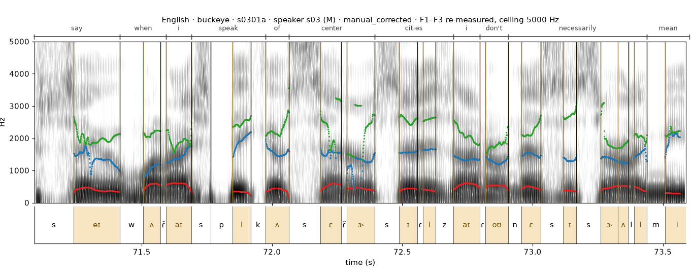
Buckeyes0301as03aligner output, hand-corrected1461 stored phones in file
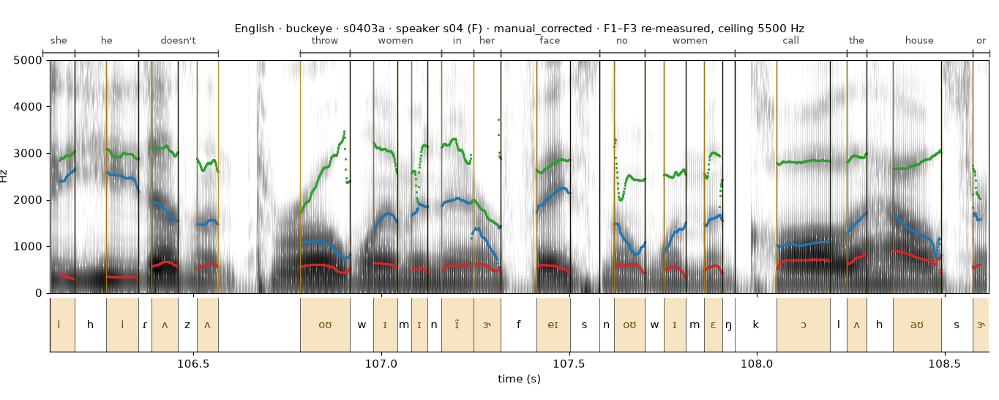
Buckeyes0403as04aligner output, hand-corrected2688 stored phones in file
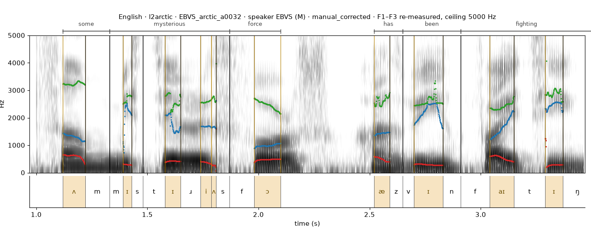
L2-ARCTICEBVS_arctic_a0032EBVSaligner output, hand-corrected31 stored phones in file
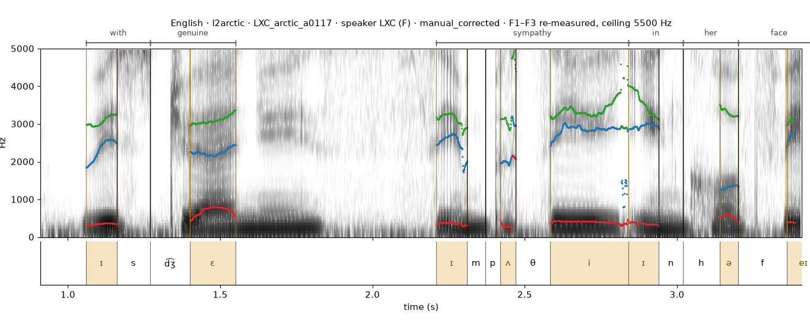
L2-ARCTICLXC_arctic_a0117LXCaligner output, hand-corrected25 stored phones in file
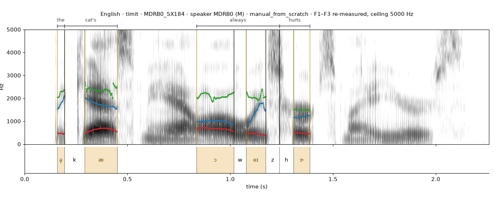
TIMITMDRB0_SX184MDRB0segmented by hand9 stored phones in file
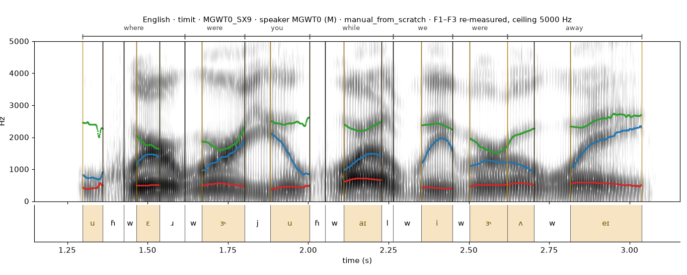
TIMITMGWT0_SX9MGWT0segmented by hand20 stored phones in file
Arabic
Arabic Speech Corpus · 1 window
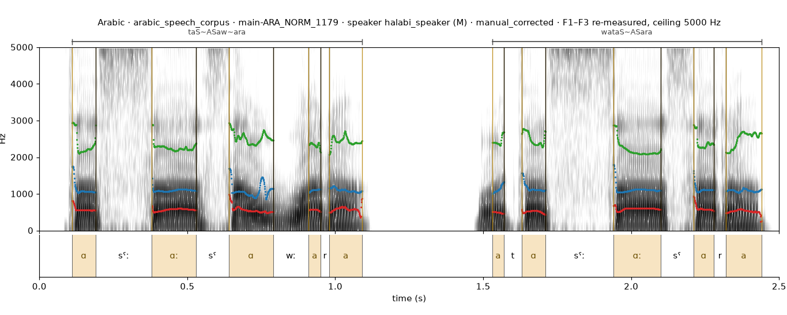
Arabic Speech Corpusmain-ARA_NORM_1179halabi_speakeraligner output, hand-corrected30 stored phones in file
Basque
VoxAngeles · 1 window
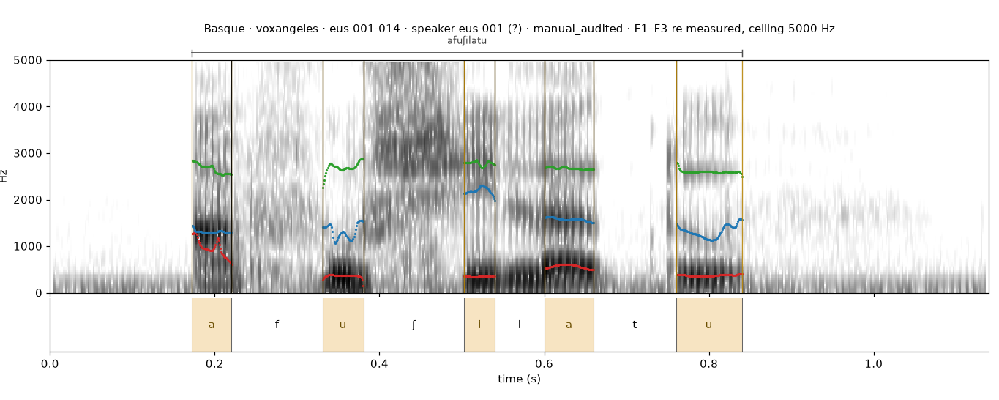
VoxAngeleseus-001-014eus-001aligner output, audited9 stored phones in file
Central Khmer
VoxAngeles · 1 window
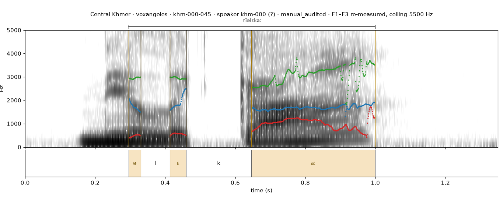
VoxAngeleskhm-000-045khm-000aligner output, audited5 stored phones in file
Dutch
IFA · 2 windows
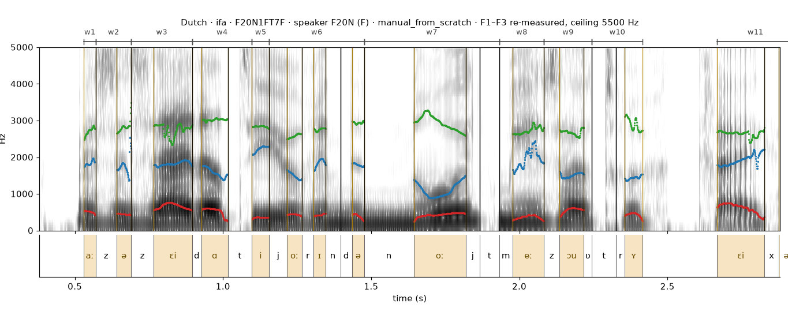
IFAF20N1FT7FF20Nsegmented by hand37 stored phones in file
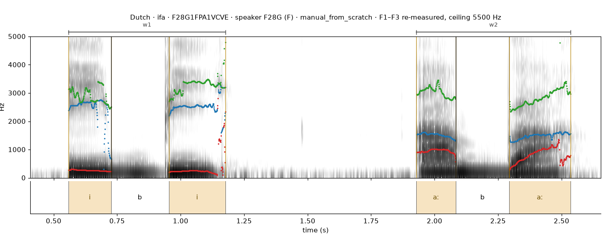
IFAF28G1FPA1VCVEF28Gsegmented by hand21 stored phones in file
Finnish
VoxAngeles · 1 window
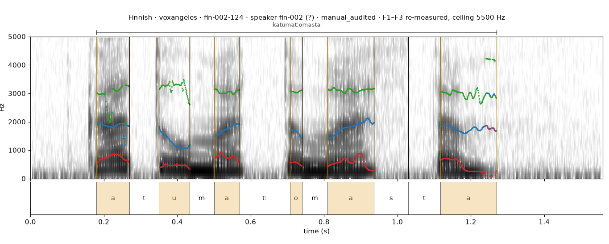
VoxAngelesfin-002-124fin-002aligner output, audited12 stored phones in file
German
PaVoQue · 1 window
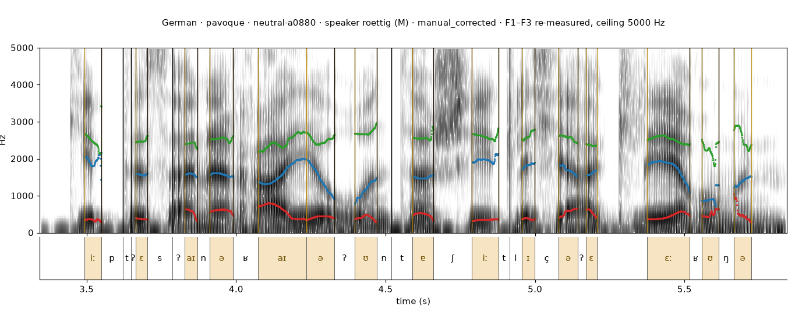
PaVoQueneutral-a0880roettigaligner output, hand-corrected57 stored phones in file
Gujarati
VoxAngeles · 1 window
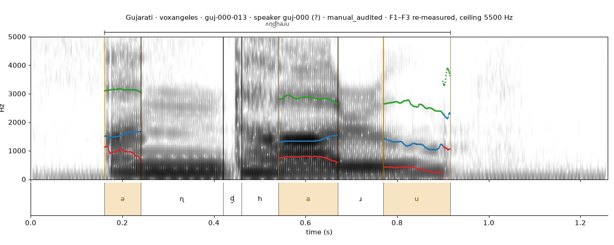
VoxAngelesguj-000-013guj-000aligner output, audited7 stored phones in file
Hausa
VoxAngeles · 1 window
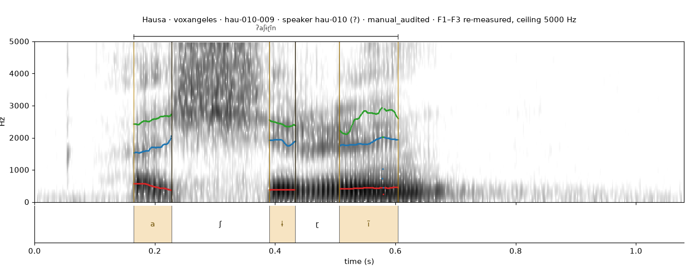
VoxAngeleshau-010-009hau-010aligner output, audited5 stored phones in file
Hungarian
VoxAngeles · 1 window
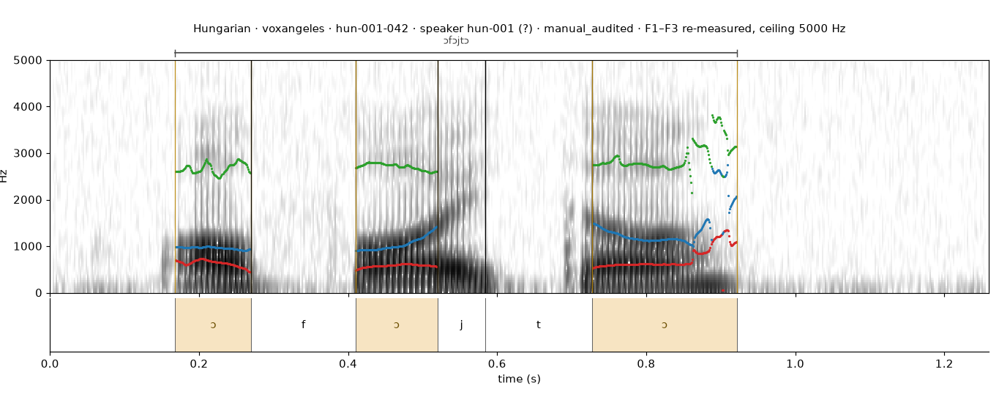
VoxAngeleshun-001-042hun-001aligner output, audited6 stored phones in file
Korean
Seoul Corpus · 2 windows
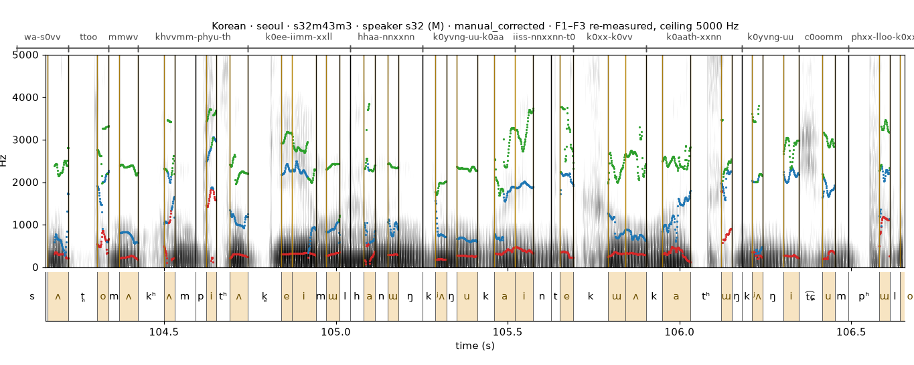
Seoul Corpuss32m43m3s32aligner output, hand-corrected5792 stored phones in file
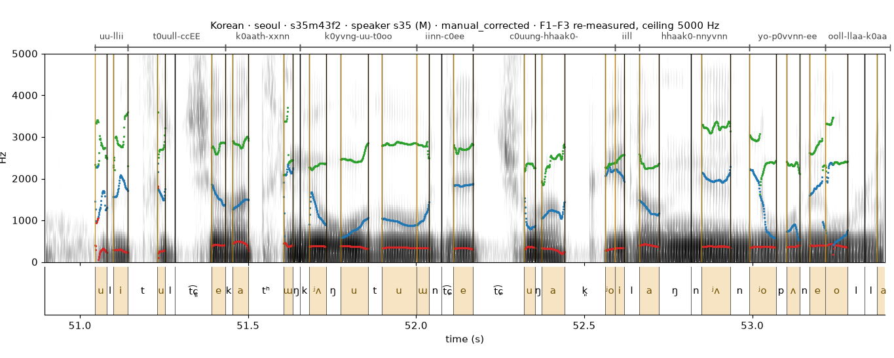
Seoul Corpuss35m43f2s35aligner output, hand-corrected4386 stored phones in file
Lakota
VoxAngeles · 1 window
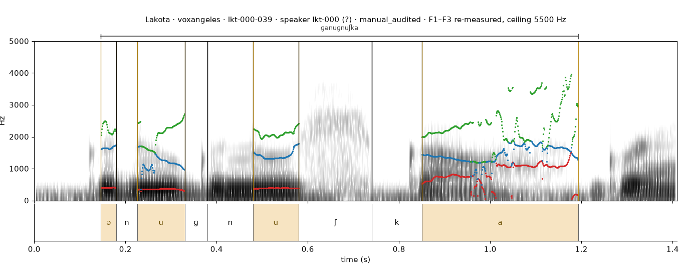
VoxAngeleslkt-000-039lkt-000aligner output, audited9 stored phones in file
Modern Greek
VoxAngeles · 1 window
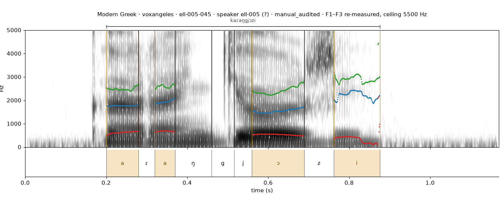
VoxAngelesell-005-045ell-005aligner output, audited9 stored phones in file
Persian
Persian Speech Corpus · 1 window
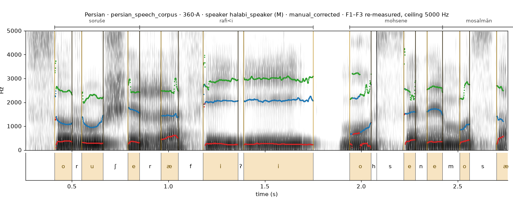
Persian Speech Corpus360-Ahalabi_speakeraligner output, hand-corrected120 stored phones in file
Swedish
Waxholm · 2 windows
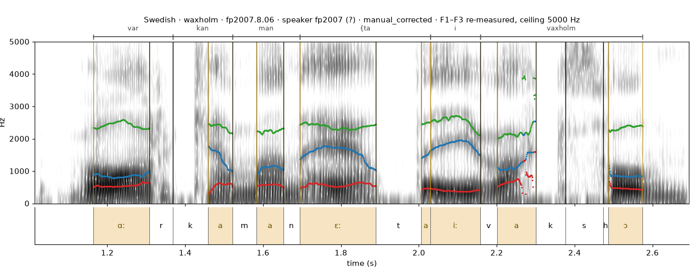
Waxholmfp2007.8.06fp2007aligner output, hand-corrected17 stored phones in file
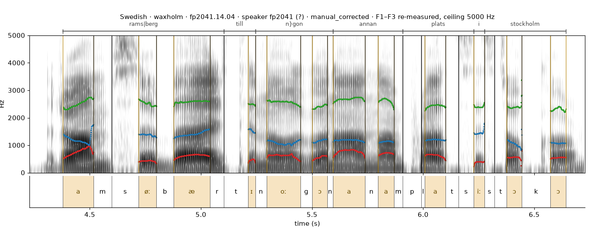
Waxholmfp2041.14.04fp2041aligner output, hand-corrected44 stored phones in file
Thai
CCOST · 2 windows
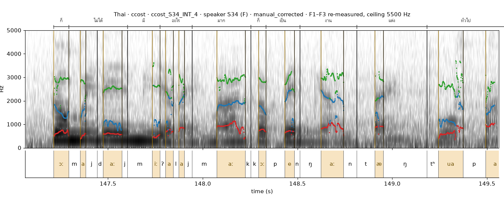
CCOSTccost_S34_INT_4S34aligner output, hand-corrected834 stored phones in file
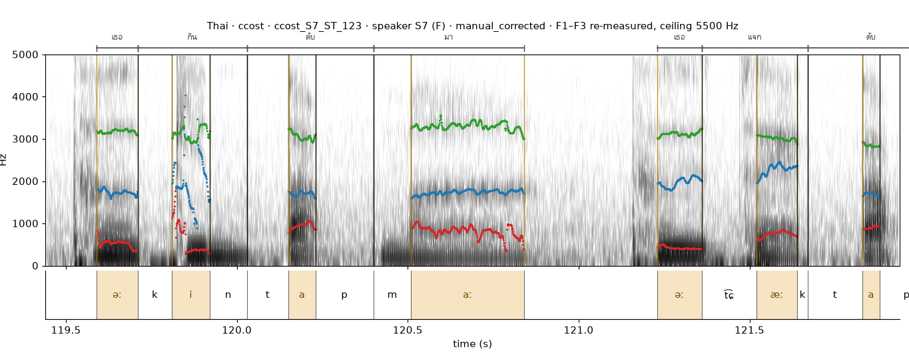
CCOSTccost_S7_ST_123S7aligner output, hand-corrected611 stored phones in file
Gaps in the phone tier are phones that belong to no V(C)V sequence (vowel hiatus, utterance edges, sequences broken by a pause): the dataset only stores segments that take part in a sequence, so nothing is drawn there. Boundaries are the corpora's own; nothing has been re-aligned.